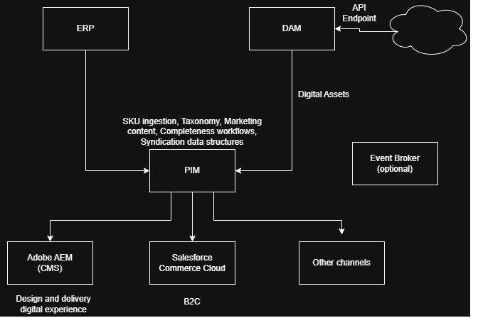

This architecture unifies product lifecycle and content delivery. ERP and DAM remain systems of record for master data and assets. PIM owns taxonomy, marketing content, completeness workflows and syndication. An optional Event Broker provides reliable pub/sub for webhooks. Downstream consumers are Adobe AEM (CMS), Salesforce Commerce Cloud (B2C) and other channels.
Hover over elements in the diagram to view role, data flow, and integration.

Each data domain has a single system of record. The PIM ingests everything it does not itself own, and is the source that pushes enriched, syndication-ready records back out to the other systems.
| Data domain | System of record | Direction relative to PIM |
|---|---|---|
| Product master data | ERP | Ingested into PIM — ERP is the source of truth for SKU core specifications |
| Inventory | ERP | Ingested into PIM along with SKU data. Later redistributed by PIM to downstream channels. |
| Digital assets | DAM | Ingested into PIM as references/links; PIM associates each asset to its matching SKU. |
| Taxonomy | PIM | Created and owned in PIM; Pushed outbound to AEM, Commerce Cloud, and other channels. |
| Enhanced content | PIM | Authored and owned in PIM; Pushed outbound like taxonomy upon approval. |
| Marketing descriptions | PIM | This is enhanced content. See above. |
APIs involved:
Event-driven or scheduled sends: ERP → PIM runs primarily on a scheduled batch cadence. (time increments for deltas TBD) Possible with event-driven pushes reserved for high-priority changes such as price or status. DAM → PIM is event-driven, firing via webhook through the Event Broker whenever an asset is published or updated. PIM → downstream channels (AEM, Commerce Cloud, other) is event-driven on approval for near-real-time updates, backed by a scheduled full-catalog sync (e.g., nightly) as a reconciliation safety net.
Webhooks, queues, and middleware: An Event Broker sits between the source systems and their consumers to decouple them — ERP, DAM, and PIM publish to broker topics rather than calling consumers directly. Queues buffer downstream delivery and absorb traffic spikes or temporary outages.
Error handling, retries, and monitoring: Every inbound payload is validated at the point of ingestion, returning structured error messages rather than failing silently. Failures can be retried automatically, after which the message is routed to a queue for manual review. All integrations log to a centralized monitoring platform with alerting on elevated error rates, and a daily reconciliation report compares source-system counts against synced counts in PIM to surface silent data loss.
Items to clarify with the client:
Risks that could delay or derail delivery:
Objective: Evaluate modeling skills, ETL knowledge, PIM hierarchies and technical precision.
Source files: Shoes.csv and Electronics.csv.
| Entity | Represents | Attributes |
|---|---|---|
| Product | The sellable concept shared by all its variants | brand, categories, marketing description, manufacturer, merchants.name |
| Item / SKU | A specific purchasable unit | sizes, colors, manufacturerNumber, dimension, weight |
| Offer / price | A merchant's price and terms for an item at a point in time — many-to-one with Item. | prices.amountMin/Max, prices.currency, prices.condition, prices.availability, prices.isSale, prices.merchant, prices.dateSeen |
| Review | Customer feedback tied to a Product/Item. Informational only | reviews.rating, reviews.text, reviews.doRecommend, reviews.username |
(inRiver) basic data model : Product → Item → Resource
Shoes → variant → Image
These need to split by delimiter to an array/list for use with product searches and breadcrumbs for downstream channels.
| Source field (raw) | raw value | Transformation | Target field (PIM) |
|---|---|---|---|
| price | "799.99USD" | Split amount from currency code | Offer.price = {amount: 799.99, currencyCode: "USD"} |
| colors | "Red,Black,Sketchy,Yellow" | Split comma list into array; check case; | Item.colorOptions = ["Red","Black","Sketchy,"Yellow"] |
| prices.isSale | "TRUE" / "FALSE" | Validate with CVL; reject unrecognized values | Offer.isSale = true/false |
| LinkTypeId | Source EntityType | Target EntityType | Cardinality |
|---|---|---|---|
| ProductItem | Product | Item | 1 → N (existing) |
| ItemResource | Item | Resource | 1 → N (existing) |
| ResourceFile | Resource | File | 1 → 1 (existing) |
| ItemReview | Item | Review | 1 → N (new) |
Objective: Clear communication, stakeholder empathy, confidence to control a room.
Client: “We want our ERP to drive product data, but we want the PIM to handle marketing content, and Shopify to do inventory rules. Is this possible without duplicating data everywhere?”
Response must explain feasibility simply, highlight risks, recommend an approach, and keep a confident advisory tone.
Yes — this is a common setup. Each system stays the source of truth for its own piece (ERP = specs, PIM = content, Shopify = inventory rules). The systems can remain in sync and not duplicate data so long as the records are not being added/updated simultaneously. Using proper APIs/webhooks while running will help and any manual updates will need to set a flag or observe system events.
Explain API rate limits and their impact on sync times. Include a non-technical analogy, mitigation options, and a recommendation.
Rate limits create a bottleneck for processing APIs. It's like the drive thru at Chik Fil le. Only a couple spots to order, and a queue of many cars waiting. You can get around this by limited batch processing and spacing them out. If you monitor the API response and know the max API limits, the service calls can be made consecutively. The recommendation is to design the systems with this in mind and stress test it well in advance
Objective: Real-world SE problem solving and issue diagnosis.
Write pseudocode for an endpoint that accepts product data, validates fields, returns structured errors, and submits valid data to a PIM ingestion API. Bonus: add rate-limit logic.
[POST] /company/pim/product payload: json
validPayloadResponse= validate(payload)
if validPayloadResponse.isValid, then
normalizeProduct(validPayloadResponse.product)
pushProductToPIM(validPayloadResponse.product) // → checkRateLimit
return 200;
else
return { result: 422, validPayloadResponse.reason }
PIM → Shopify outbound integration fails intermittently (429s, occasional 500s, some products missing required data).
For the Developer: Check the logs during the issues timeframe and check error messages. Validate the rate limiting issue and Shopify issues. For retries, throttle the send rate. For the 500s, identify on the Shopify side before determining the course of action. Identify possible race condition. Assuming rate limiting has been moved to error queue and can be retried. Make any necessary fixes that can prevent this before further batches are sent
For the Client: A few products were sent to Shopify faster than it could accept them, and a handful were missing information before they went out. We've slowed the sync down to stay within Shopify's limits and added a check to catch incomplete products earlier — this should close the gaps without needing a manual re-sync.
Objective: Client-facing presentations that communicate with clarity.
Create a 3–5 slide deck covering:
PowerPoint, Google Slides or similar. Optional short video of yourself presenting is welcomed.
Objective: Alignment with Ntara’s values of collaboration, transparency, client service, growth mindset and value-driven decisions.
Describe a time technical correctness conflicted with team alignment or client needs. Cover how you decided, the three-lens test (employee / customer / company), and what you learned.
I'm not sure how applicable this is, but Ive postponed work on a number of occasions in favor of a better design
I've done this both as the project architect and as a developer. The point being that the projected timeline gets pushed in favor of the better end solution.
Project is heading toward long-term issues while PM and lead developer are confident. Write how you would raise the concern while upholding collaboration & integrity, building trust, protecting the client/company outcome, and showing a growth mindset.
I would set a meeting and lay it all out. Face to face is always best for me and is much easier to be pursuasive as a well as being able to read the room and determine if all parties are truly inline. Meeting invite would be prefaced with detailed notes regarding the issue, pain points, possible options and next steps.
Pick two values and answer why they resonate, how you have demonstrated them, and how you would apply them as a Solution Engineer.
Clarity — Resonates because most of my work is translating something complex (an API, a data model, an integration tradeoff) into what a developer, a client, or an exec actually needs to hear. I've demonstrated it across roles as a developer, designer, systems integrator, and instructor — same information, different altitude depending on the room. As an SE I'd apply it by keeping docs and client updates simple enough that nobody needs a follow-up meeting just to understand what was said.
Ownership — Resonates because I don't like handing off a problem half-solved. I've stayed with issues past the point they technically became someone else's, on more than one project where the timeline mattered. As an SE that means following up on open items without being chased for status.